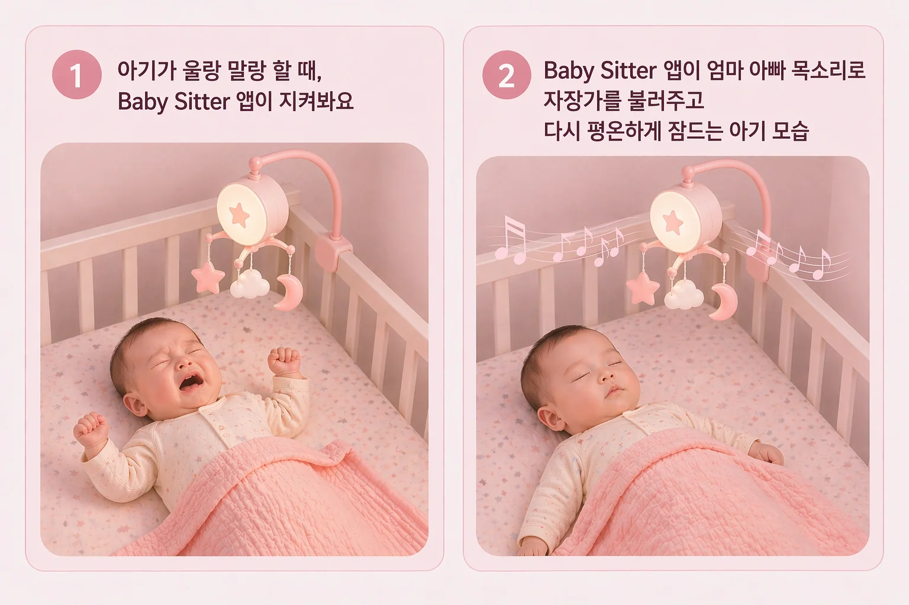

깰 듯 말 듯한 순간에 먼저 반응해요
작은 뒤척임이 커지기 전에 아기가 다시 잠들 수 있도록 토닥여줘요.
- 소리와 움직임을 함께 살펴요.
- 엄마, 아빠 목소리 같은 익숙한 소리로 아기를 토닥여줘요.
Baby Sitter
남는 안드로이드폰 하나만 아기 방에 두면, Baby Sitter 앱이 아기의 소리와 움직임을 살피고 깰 듯한 순간을 먼저 알아차려요. 엄마, 아빠 목소리 자장가로 토닥여주고 다시 잠들도록 도와줘요.

같은 Wi-Fi 안에서만 원격으로 보고, 영상을 클라우드에 올리지 않도록 설계되어 있어요.
아기가 칭얼 댈 때, 문을 열어볼지 조금 더 기다릴지 망설이지 않으셔도 됩니다.
작은 뒤척임이 커지기 전에 아기가 다시 잠들 수 있도록 토닥여줘요.
아기 방 문을 자주 열지 않고도 상태를 볼 수 있어, 다시 깨울까 조심스러운 밤에 특히 편해요.
아기의 귀여운 모습을 실시간으로 보는데서 끝나지 않고, 수면 방해 원인을 파악할 수 있어요
집에 쉬고 있는 안드로이드폰, 작은 거치대, 집 안 Wi-Fi면 충분해요.
집에 쉬고 있는 안드로이드폰을 아기 침대가 보이는 자리에 세워두세요.
비싼 장비보다, 이미 집에 있는 것을 다시 사용하시면 돼요.
부모 폰만 같은 Wi-Fi에 연결하면, 아기를 깨우지 않고 관찰할 수 있어요. 침대에 습도, 온도기 거치해두면 더 좋습니다.
Baby Sitter는 집 안에서 아기 상태를 살피는 보조 도구입니다. 의료기기가 아니며, 보호자 감독을 대신하지 않습니다.
휴대폰, 충전선, 거치대는 아기 침대 안이나 가장자리에 두지 말고, 최소 1m 정도 떨어진 안정적인 위치에 두는 편이 좋습니다.
아기 얼굴과 침대 주변이 보이도록 두되, 넘어지기 쉬운 위치나 느슨한 충전 케이블은 피하는 편이 좋습니다.
이 앱은 아기가 깰 듯한 순간을 더 빨리 알아차리도록 돕는 용도이며, 응급상황 감지나 의료 판단을 보장하지 않습니다.
튜토리얼 순서대로 필요한 감지 기능과 원격 기능을 켜고, 자장가 준비해주시면 됩니다.
부모 목소리 자장가를 녹음해두면, 아기가 깼을 때 익숙한 소리를 듣고 더 쉽게 잠들 거예요.
권한을 허용하고 민감도를 맞추면, 아기가 깨기 전의 작은 신호를 더 자연스럽게 알아챌 수 있어요.
한번 연결해두면 필요할 때마다 브라우저를 열어서 방 문을 열지 않고 아기를 관찰할 수 있어요.
설치 전에 가장 많이 헷갈리는 부분을 먼저 정리해두었어요.
아기 방에 둘 안드로이드폰, 간단한 거치대, 집 안 Wi-Fi, 그리고 부모가 볼 기기 하나면 됩니다. 새 홈캠 없이도 시작할 수 있도록 설계했어요.
현재 랜딩에서 강조하는 기본 흐름은 같은 Wi-Fi 안에서 보는 방식입니다. 핵심 메시지는 집 안 프라이버시와 간단한 설정에 맞춰져 있어요.
홈페이지와 홍보 문구에서는 아기 방 영상이 클라우드로 전송되지 않는 점을 핵심 신뢰 요소로 안내하고 있어요. 또한 Baby Sitter는 의료기기가 아니며 보호자 감독을 대신하지 않습니다.
안드로이드폰 하나와 작은 거치대 하나면 충분해요.
오늘부터 우리 아기가 조금 더 편하게 잘 수 있도록 도와주세요.